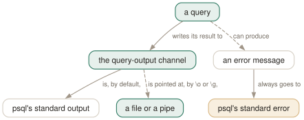

Day 10
Sending output elsewhere
Three channels, one of which \o moves — and errors are not it.
By the end of today you can
- redirect one query's output without disturbing the next one
- capture a session's results to a file and know what will be missing from it
- pipe a result straight into a shell command without a temporary file
A mode and a one-shot
Two commands send query output somewhere other than your screen, and the difference between them is how long the decision lasts. \o is a mode that stays on until you turn it off. \g applies to the query in front of it and nothing else. The one-shot is almost always what you meant.
testdb=# SELECT * FROM my_table
testdb-# \g /tmp/one.txt -- this query only
testdb=# SELECT 1; -- back on screen, automatically
testdb=# \o /tmp/many.txt -- a mode: everything from here on
testdb=# SELECT 1;
testdb=# SELECT 2;
testdb=# \o -- and off again
Both take a pipe instead of a filename, and then the entire rest of the line is handed to the shell verbatim — no variable interpolation, no backquote expansion, exactly as with \copy yesterday:
testdb=# SELECT * FROM my_table
testdb-# \g |wc -l
8
Which is the shortest path from a query result to anything your shell can do — \g |column -t -s'|', \g |jq . over a JSON column, \g |xclip -selection clipboard to hand somebody a table.

\o moves exactly one of them. The amber box is the consequence people meet at the worst moment: error messages never follow the redirection, so a session captured with \o contains the results and none of the failures. When you want everything, redirect at the shell with 2>&1 or use -L.The trick \o does not have
Parentheses immediately after \g hold a space-separated list of \pset assignments that apply to this query alone. No spaces around the =, and spaces required between clauses:
testdb=# SELECT * FROM my_table
testdb-# \g (format=csv tuples_only=on)
1,one
2,two
3,three
4,four
testdb=# SELECT * FROM my_table LIMIT 1;
first | second
-------+--------
1 | one
(1 row)
The session's settings are untouched — that second query is aligned again. Combine it with a destination (\g (format=csv) out.csv) and you have “export this one result as CSV” without changing anything you will have to change back.
Two relatives worth knowing. \gx is \g with expanded=on forced, for the row that turns out to be surprising. And \g on an empty buffer re-runs the last query, so \g (format=csv) out.csv straight after looking at a result on screen exports the thing you were just looking at.
Three channels, and the one that never moves
psql writes to three places, and \o redirects one of them. What it does redirect is generous — tables, command tags like INSERT 0 1, server notices, and the output of database-querying backslash commands such as \d. What it does not redirect is the part you most want when something has gone wrong:
The three printing commands exist precisely so you can choose a channel on purpose:
\echo- psql's standard output. Unaffected by \o, so it stays on your screen.
\qecho- the query-output channel — it lands in whatever \o is pointing at.
\warn- standard error. Never captured, never mixed into piped data.
So \qecho puts headings between the results of a captured report, and \warn lets a script talk to the operator without corrupting the stream another program is parsing.
From the command line there are two more. -o file is \o decided at start-up. -L file is different and underused: it logs each query and its output to a file, in addition to the normal destination, with the query wrapped in the same /******** QUERY *********/ banners that -E uses. It is the closest thing psql has to a transcript.
Machine-readable output without meta-commands
When the consumer is another program, the flags matter more than the commands, because they work in a -c one-liner where meta-commands cannot go:
$ psql -X -A -t -F, -c 'SELECT first, second FROM my_table' > out.csv
$ psql -X --csv -c 'SELECT * FROM my_table' > proper.csv
$ psql -X -A -t -z -c 'SELECT name FROM t' | xargs -0 -n1 echo
-A- unaligned — one row per line.
\pset format unaligned. -t- tuples only: no header, no footer, no title.
-F sep- the field separator.
-zmakes it a zero byte. -R sep- the record separator.
-0makes it a zero byte — forxargs -0. --csv- proper CSV, with RFC 4180 quoting. Prefer it to
-A -F,.
Large objects, briefly
Four commands for PostgreSQL's large objects, and they are here rather than on their own day because they are rare and they are all the same shape — a file on the client, moved by psql, exactly like \copy:
testdb=# \lo_import '/tmp/photo.xcf' 'a picture of me'
lo_import 16456
testdb=# \lo_list+
ID | Owner | Access privileges | Description
-------+----------+-------------------+-----------------
16456 | postgres | | a picture of me
testdb=# \lo_export 16456 '/tmp/out.xcf'
testdb=# \lo_unlink 16456
The comment is optional and worth always giving, because \lo_list is otherwise a list of numbers. The OID also lands in :LASTOID, which is the one place that variable is still useful — after an INSERT it is always 0 against any server since version 12.
As with \copy, the point of the psql versions is that they act as you, on your filesystem; the server functions lo_import and lo_export act as the server, on its filesystem, and need the privileges to match.
Today's habit
Use \g and stop using \o. Whenever you catch yourself about to write a result to a file, put the destination on the \g instead — it cannot be left switched on, and it takes one-shot formatting options that \o cannot.
Tomorrow: running psql without a terminal at all, which is where the exit codes from Day 2 finally earn their keep.
New vocabulary
Commands
| Command | Does |
|---|---|
\o file | Point all future query output at a file. Bare \o restores stdout. |
\o |command | Pipe all future query output to a shell command. |
\g file | This one query's output to a file. \g |cmd pipes it instead. |
\g (opt=val ...) | A one-shot \pset for this query only. |
\qecho text | Write to the query-output channel, so it lands in the same file. |
\warn text | Write to standard error, so it never lands in the file. |
\w file | Write the query buffer — not its output — to a file. |
\lo_import file | Store a file as a large object. Also \lo_export, \lo_list, \lo_unlink. |
Options
| Option | Does |
|---|---|
-o file | Send all query output to a file, decided at start-up. |
-L file | Log each query and its output to a file, as well as to the normal destination. |
tuples_only | Data only — no header, no footer, no title. -t on the command line. |
fieldsep recordsep csv_fieldsep | Separators for unaligned and CSV output; -F, -R, -z, -0. |
Today's configappend to ~/.psqlrc
psql's default pager wraps long lines, which turns a wide result into an unreadable ribbon. -S chops them instead, so a wide table scrolls sideways with the arrow keys; -X leaves the screen contents alone on exit, and -F skips the pager altogether when the output already fits on one screen.
\setenv PSQL_PAGER 'less -SXF'
psql reads this once at start-up, after connecting. Re-read it in place with \i ~/.psqlrc.
Drillsdo these in a real terminal, today
Self-check
Answer out loud first, then unfold.
You capture a whole session with \o session.log to send to a colleague. The log looks complete and contains no sign of the failure you were investigating. What is missing, and why?
Error messages. The manual page defines “query results” for \o as tables, command responses, notices and the output of database-querying backslash commands — and then says explicitly “but not error messages”. Those go to standard error, which \o does not touch.
Two ways to get everything. Redirect at the shell instead — psql ... > session.log 2>&1 — or use -L, which logs each query alongside its output. Neither is what people reach for, which is why so many pasted logs end just before the interesting part.
What is the difference between \o file and \g file, and which one do you almost always want?
\o is a mode: it redirects all future query output until you turn it off with a bare \o. \g file is one-shot: it sends this query's output to the file and the next query goes back to your screen.
The one-shot form is almost always what you meant, because the failure mode of \o is silent — you forget to turn it off, run six more queries, and wonder why the screen has gone quiet. \g has a further trick \o does not: \g (format=csv tuples_only=on) applies printing options for that query alone.
\echo, \qecho and \warn all print text. Which goes where?
Three commands for three channels, and that is the whole reason there are three:
\echo- psql's standard output. Not affected by \o, so it stays on your screen.
\qecho- the query-output channel — so it lands in whatever \o is pointing at.
\warn- standard error. Never captured by \o, and never mixed into piped data.
So \qecho is how you put headings between the results in a captured report, and \warn is how a script tells the operator something without corrupting the output another program is about to parse.
A file written with \copy ... TO has no header row and one written with \g out.csv and --csv does. Why, and which is easier to control?
\copy is SQL COPY underneath, so headers come from COPY's own HEADER option and nothing psql prints is involved. Output written by \g or \o is psql's ordinary formatted output, so it obeys \pset — format, tuples_only, footer, null and the separators.
Which makes them good at different things. \copy gives you RFC-4180 CSV with quoting rules the server implements, and it streams. \g gives you anything \pset can express — including a one-shot \g (format=csv) — but the null string and the footer are yours to remember.
Cheat sheet
Three channels. \o moves one of them, and it is not the one with the errors in it.
\g file -- ONE query's output to a file \g |cmd -- ...to a pipe
\g (format=csv tuples_only=on) file -- one-shot \pset, session untouched
\gx -- \g with expanded forced \g on an empty buffer re-runs
\o file -- a MODE: everything until a bare \o turns it off
\w file -- the query BUFFER, not its output
\echo -> stdout \qecho -> the \o destination \warn -> stderr
errors ALWAYS go to stderr: \o never captures them. Use > log 2>&1 or -L file
-o file -- \o from the command line -L file -- log queries AND output
-A -t -F, / --csv / -z -0 -- machine-readable, and they work inside -c
\lo_import f 'comment' \lo_list+ \lo_export oid f \lo_unlink oid (:LASTOID)
Everything through Day 10
Keys
| Key | Does |
|---|---|
| C-c | Abandon the line you are typing and empty the query buffer. |
| C-d | End the session — but only when the buffer is empty. |
| Tab | Complete a keyword or an object name. Twice for a menu, depending on the library. |
| UpC-p | The previous line from the history. |
| C-r | Reverse incremental search through the history. The one worth learning today. |
Commands
| Command | Does |
|---|---|
psql | Connect with the defaults and start an interactive session. |
; | Dispatch the buffer. Not a meta-command — SQL's own statement terminator. |
\g | Dispatch the buffer, exactly as a semicolon does. |
\p | Print the buffer without sending it. \print in full. |
\r | Reset: throw the buffer away. \reset in full. |
\e | Edit the buffer in $EDITOR; on exit it is re-parsed and run. |
\w file | Write the buffer to a file instead of sending it. |
\; | Append a semicolon to the buffer without dispatching it. |
\? | Every meta-command, in twelve groups. 121 of them in 18.6. |
\h SELECT | Syntax for one SQL command. \h alone lists what it knows. |
\q | Quit. |
\c dbname | Reconnect to another database, reusing host, port and user. |
\c - user | Reconnect as another user. A dash means “leave that one as it is”. |
\c -reuse-previous=on ... | Merge a conninfo string onto the current parameters. |
\conninfo | A twelve-row table describing the live connection. |
\password | Change a password without it reaching your history or the server log. |
\encoding | Show the client encoding, or set it. |
\d | Bare: tables, views, materialized views, sequences and foreign tables. |
\d my_table | Describe one relation: columns, types, nullability, defaults, indexes, constraints. |
\d+ my_table | Adds storage, compression, stats target and per-column comments. |
\dt | Tables. The letters combine — \dti lists tables and indexes. |
\di \dv \dm \ds \dE | Indexes, views, materialized views, sequences, foreign tables. |
\dn | Schemas. \dn+ adds permissions and comments. |
\l | Databases, with owner, encoding, locale provider and privileges. |
\dP | Partitioned tables and indexes; add n to include non-root ones. |
\dx | Installed extensions; \dx+ lists everything each one owns. |
\df pattern | Functions, with result type, argument types and kind. |
\df pattern t1 t2 | Extra arguments are type patterns, matched positionally. |
\sf name | The function's source as CREATE OR REPLACE. \sf+ numbers the body. |
\sv name | The same for a view. \ev and \ef edit rather than show. |
\du | Roles and their attributes. \dg is the same command. |
\drg | Role grants: who is a member of what, with ADMIN/INHERIT/SET. |
\dp | Access privileges on tables, views and sequences. \z is the same command. |
\ddp | Default privileges — what future objects will be created with. |
\dconfig | Server parameters set to non-default values. \dconfig * for all of them. |
\drds | Settings attached to a role, a database, or the pair. |
\dT \do \da | Types, operators and aggregates — same grammar, rarer questions. |
\pset | With no argument, print all 22 printing options and their current values. |
\x | Toggle expanded mode. \x auto is the setting worth keeping. |
\a \t \f \C \H | Shortcuts kept for compatibility: format, tuples_only, fieldsep, title, HTML. |
\set | With no argument, list every variable currently set, with its value. |
\set NAME value | Set a psql variable. Several values are concatenated. |
\unset NAME | Delete it — or, for a control variable, restore its default. |
\echo :NAME | Read a variable back. The cheapest debugging tool psql has. |
\i ~/.psqlrc | Re-read the startup file without restarting. Tilde expansion works. |
\e | Edit the buffer — or a file, or the last query — optionally at a line number. |
\ef name | Fetch a function's definition into your editor. \ev for a view. |
\s file | Print the command history, or write it to a file. |
\errverbose | Repeat the last error at maximum verbosity, changing no settings. |
\timing on | Report how long each statement took. Milliseconds, then m:ss past a second. |
\copy tbl FROM 'file' | Client-side load. psql reads the file, as you, with no server privileges. |
\copy (query) TO 'file' | Client-side export. A table name, or a query in parentheses. |
\copy tbl FROM PROGRAM 'cmd' | Run a command on the client and load its output. TO PROGRAM pipes out. |
\copy tbl FROM stdin | Data rows follow, up to a line containing only \.. |
\copy ... TO pstdout | psql's real stdout, ignoring \o. pstdin is the input twin. |
\copy ... FROM 'f' WHERE cond | Filter rows as they load — the condition is evaluated server-side. |
COPY ... TO STDOUT then \g f | The multi-line, interpolating alternative to \copy. |
\o file | Point all future query output at a file. Bare \o restores stdout. |
\o |command | Pipe all future query output to a shell command. |
\g file | This one query's output to a file. \g |cmd pipes it instead. |
\g (opt=val ...) | A one-shot \pset for this query only. |
\qecho text | Write to the query-output channel, so it lands in the same file. |
\warn text | Write to standard error, so it never lands in the file. |
\w file | Write the query buffer — not its output — to a file. |
\lo_import file | Store a file as a large object. Also \lo_export, \lo_list, \lo_unlink. |
Options
| Option | Does |
|---|---|
-h -p -U -d | Host, port, user, database. -d also takes a whole conninfo string. |
-w -W | Never prompt for a password / always prompt. Both persist across \c. |
-l | List databases and exit. Connects to postgres unless told otherwise. |
PGHOST PGPORT PGUSER PGDATABASE | libpq's defaults for the four parameters. |
PGPASSFILE | The password file. Default ~/.pgpass, and it must be mode 0600. |
PGSERVICEFILE | Named connection recipes. Default ~/.pg_service.conf. |
S | Include system objects: \dtS. Supplying any pattern does this too. |
+ | More columns — and a size lookup per relation, so it is not free. |
x | Expanded output for this listing only. Goes after S or +, never straight after \d. |
a n p t w | Function-kind filters for \df: aggregate, normal, procedure, trigger, window. |
format | aligned (default), wrapped, unaligned, csv, html, asciidoc, latex, troff-ms. |
expanded | on / off (default) / auto — vertical records, always or only when too wide. |
null | What to print for NULL. Default is nothing, which reads exactly like an empty string. |
border | 0 none, 1 dividing lines (default), 2 a full frame. |
linestyle | ascii (default) or unicode. Aligned and wrapped only. |
footer | The (n rows) line. off removes it. |
columns | Target width for wrapped, and the threshold for expanded auto. 0 means use $COLUMNS. |
pager | off / on (default, meaning “only when it does not fit”) / always. |
xheader_width | full (default) / column / page / an integer — how long the record rule may be. |
-X | Skip both startup files. Every script should pass this. |
PSQLRC | Where the personal startup file lives. Overrides ~/.psqlrc. |
PGSYSCONFDIR | Where the system-wide psqlrc is looked for. |
QUIET | Suppress psql's informational chatter. The startup file's bookends. |
VERSION_NAME SERVER_VERSION_NUM | psql's version and the server's, as a string and a number. |
HISTFILE | Where history is kept. Default ~/.psql_history. Must be set in psqlrc. |
HISTSIZE | How many commands to keep. Default 500; a negative value means no limit. |
HISTCONTROL | ignorespace / ignoredups / ignoreboth / none (default). |
COMP_KEYWORD_CASE | Casing for completed keywords. Default preserve-upper. |
PSQL_EDITOR EDITOR VISUAL | Checked in that order. vi if none of them is set. |
PSQL_EDITOR_LINENUMBER_ARG | How a line number is passed. Default +, which suits vi and emacs. |
AUTOCOMMIT | On by default: every statement commits itself unless you opened a block. |
ON_ERROR_ROLLBACK | off (default) / interactive / on — implicit per-statement savepoints. |
ON_ERROR_STOP | Stop at the first error instead of carrying on. Exit code 3 in a script. |
VERBOSITY | default / verbose / terse / sqlstate. |
SHOW_CONTEXT | never / errors (default) / always — the CONTEXT field. |
ERROR SQLSTATE ROW_COUNT | Set after every statement: did it fail, with what code, how many rows. |
LAST_ERROR_MESSAGE LAST_ERROR_SQLSTATE | The most recent failure, still there after later successes. |
-o file | Send all query output to a file, decided at start-up. |
-L file | Log each query and its output to a file, as well as to the normal destination. |
tuples_only | Data only — no header, no footer, no title. -t on the command line. |
fieldsep recordsep csv_fieldsep | Separators for unaligned and CSV output; -F, -R, -z, -0. |